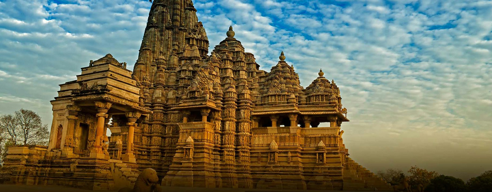
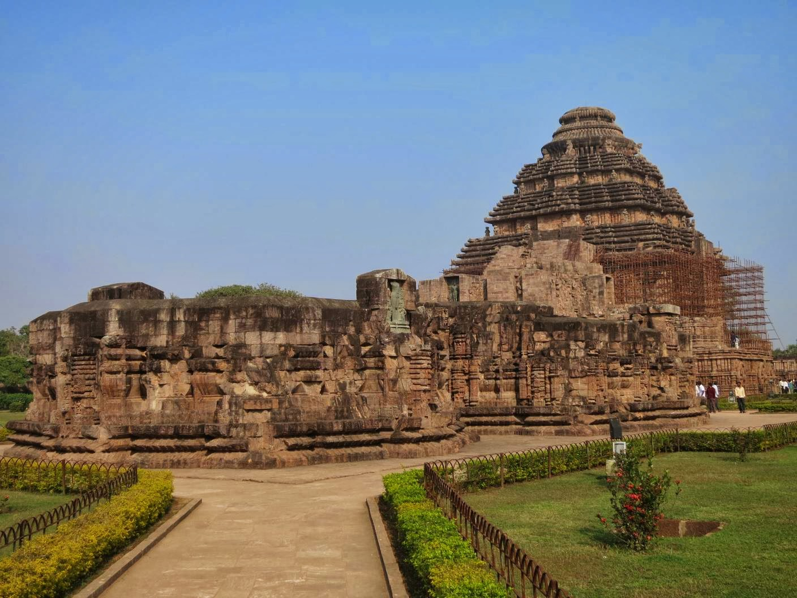
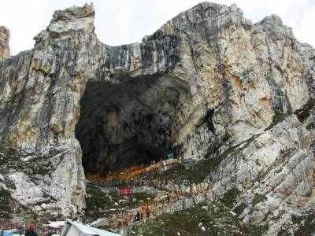
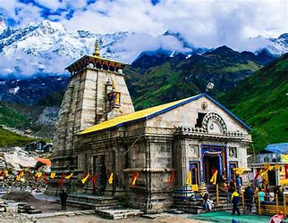
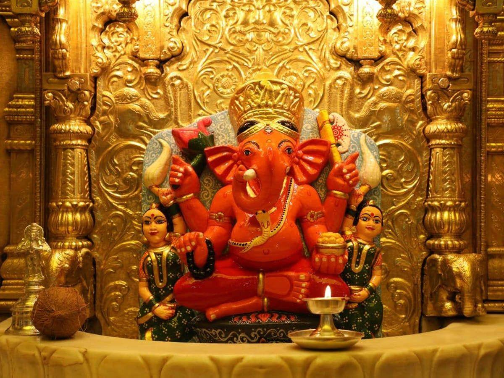
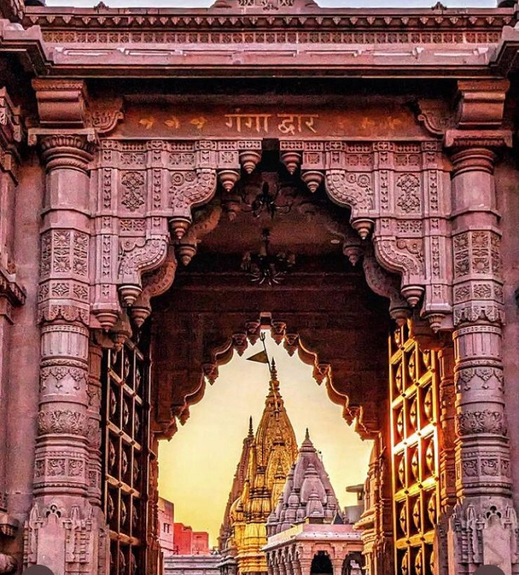
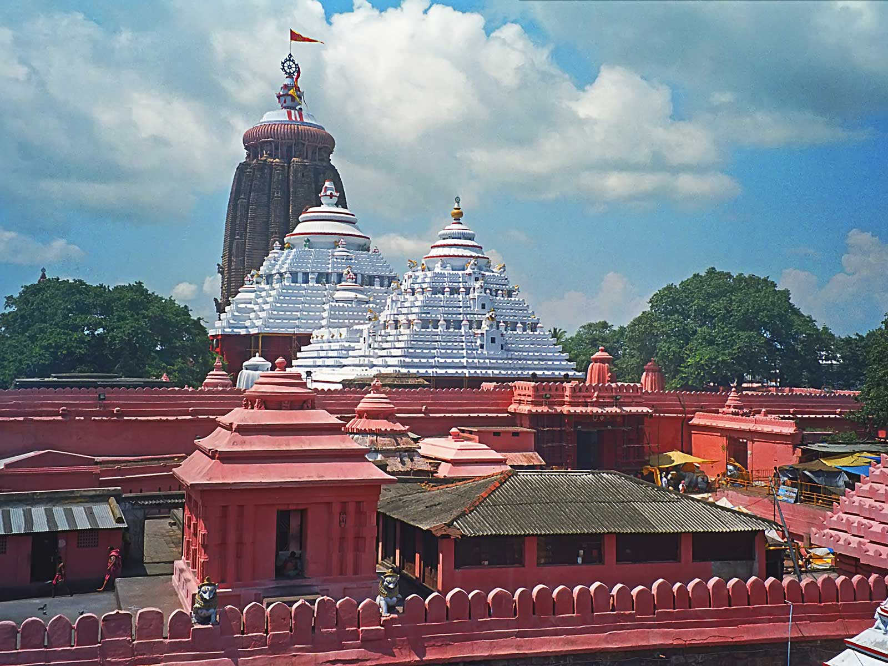
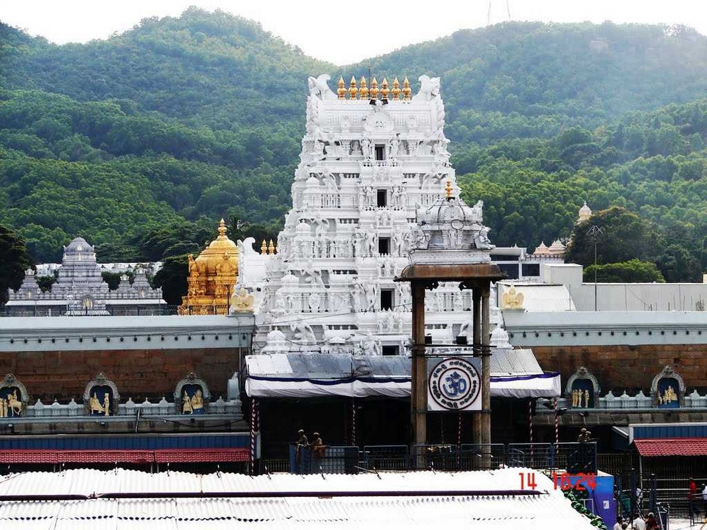

HOME | POPULAR TEMPLES | FAMOUS TEMPLES | NORTH INDIA | SOUTH INDIA | EAST INDIA | WEST INDIA | ABOUT | CONTACT
|  |
|
|||||||

Badrinath TempleChamoli, Uttarakhand
|

Sun TempleKonark, Odisha
|

Somnath TempleSomnath,Gujarat
|

Amarnath TempleJammu and Kashmir
|
||||

Kedarnath TempleRudraprayag, Uttarakhand
|

Ramanathaswamy TempleRameshwaram, Tamil Nadu
|

Siddhivinayak TempleMumbai, Maharashtra
|

Kashi Vishwanath TempleVaranasi, Uttar Pradesh
|

Shri Jagannath TemplePuri, Odisha
|

Tirupati Balaji TempleTirumala, Andhra Pradesh
|

Vaishno Devi TempleKatra, Jammu and Kahsmir
|

Golden TempleAmritsar, Punjab
|